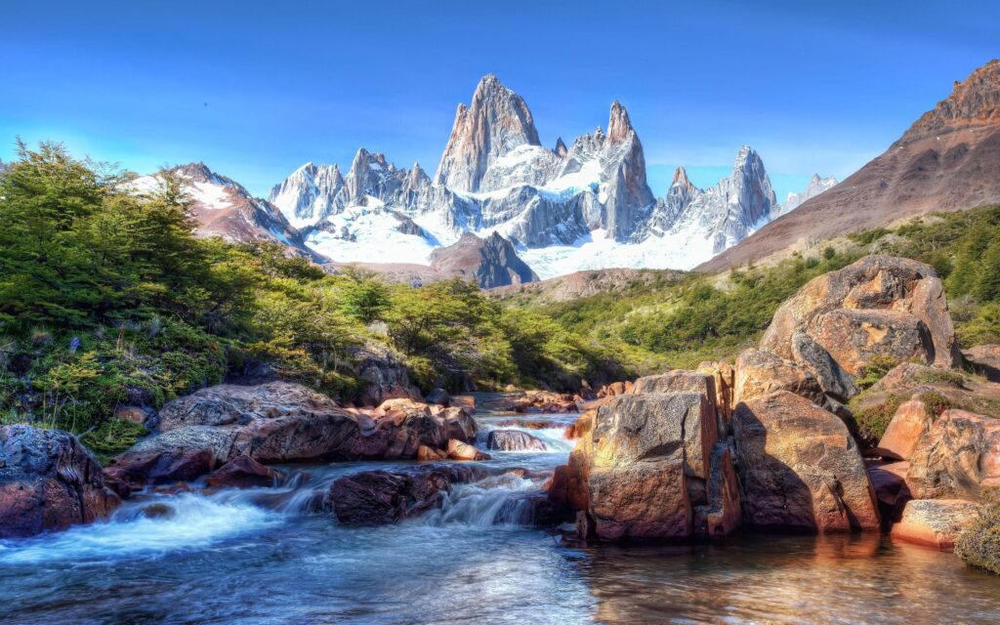

Patagonia Untamed: Trekking Through Argentina & Chile

A Land of Raw, Untamed Beauty
Patagonia is one of the last great frontiers on Earth—a land of jagged peaks, massive glaciers, and untamed wilderness stretching across Argentina and Chile. For adventure seekers, this remote paradise offers some of the most breathtaking trekking routes in the world, where every turn reveals another awe-inspiring landscape. From towering mountains to vast golden plains, Patagonia feels like stepping into a world untouched by time.
Torres del Paine: Chile’s Iconic Wilderness
One of the most famous trekking destinations in Patagonia is Torres del Paine National Park in Chile. Its dramatic granite towers, shimmering blue lakes, and sprawling valleys make it one of the most visually stunning places on the planet. Hiking through Torres del Paine is an unforgettable experience, whether it’s the shorter but iconic W Trek or the more demanding O Circuit that takes you deeper into the heart of the wilderness. Every step of the journey is filled with surreal beauty, from the windswept pampas dotted with guanacos to the powerful glaciers that crack and shift with an earth-shaking force. The park’s unpredictable weather only adds to the adventure—one moment the sky is clear and blue, and the next, fierce winds sweep across the landscape, reminding you of nature’s raw power.
El Chaltén: Argentina’s Trekking Capital
cross the border in Argentina, the small town of El Chaltén is known as the trekking capital of the country, offering some of the most rewarding hikes in Patagonia. The legendary Laguna de los Tres trail leads hikers through forests and rivers before revealing a jaw-dropping view of Mount Fitz Roy, its sharp granite spires piercing the sky. Another breathtaking route, the Laguna Torre trek, ends at a glacial lake with floating icebergs, surrounded by rugged peaks. Unlike Torres del Paine, where camping spots and lodges must be booked in advance, El Chaltén offers a sense of freedom, allowing hikers to explore at their own pace, setting up camp wherever they find a perfect view.
The Perito Moreno Glacier: A Living Ice Giant
No trip to Patagonia is complete without witnessing the sheer power of the Perito Moreno Glacier in Argentina’s Los Glaciares National Park. Stretching over 19 miles, this massive ice field is one of the few advancing glaciers in the world. Visitors can watch in awe as enormous chunks of ice break off and crash into the turquoise waters of Lago Argentino, creating a thunderous roar that echoes across the landscape. For a truly immersive experience, travelers can walk across the glacier itself, trekking over its crevasses and witnessing its icy blue depths up close. It’s a humbling reminder of nature’s grandeur and the ever-changing beauty of the planet.
Wildlife Encounters in Patagonia’s Remote Corners
Beyond its dramatic landscapes, Patagonia is also home to an incredible variety of wildlife. Pumas, the elusive kings of the region, roam the grasslands of Torres del Paine, while massive Andean condors soar above the jagged peaks. Along the coastline, visitors can walk among colonies of Magellanic penguins on Isla Magdalena, an island where thousands of these charming creatures nest. The vast steppe lands are dotted with guanacos, the wild relatives of llamas, and if you’re lucky, you might even spot a pod of orcas patrolling the frigid waters near the Valdés Peninsula. Patagonia is a paradise not just for trekkers but for anyone who dreams of seeing nature in its purest form.
The Challenge and Reward of Patagonia’s Extreme Weather
Patagonia’s weather is as wild as its landscapes. In a single day, you can experience all four seasons—blazing sunshine, sudden snowfall, powerful winds, and unexpected rain showers. It’s what makes trekking here both thrilling and unpredictable. The strong Patagonian winds, sometimes reaching over 70 mph, can make even a simple hike feel like an expedition. But it’s all part of the adventure, adding to the sense of accomplishment when you reach a stunning viewpoint or complete a long trek through the rugged terrain. The key to embracing Patagonia is to come prepared, layering up and accepting that nature will dictate your journey.
A Journey Into the Wild
Patagonia is not just a place—it’s an experience. It’s a journey into the unknown, where the vastness of nature makes you feel both small and deeply connected to the world around you. Whether you’re hiking among towering peaks, watching glaciers crumble into icy waters, or simply standing in silence as the wind howls across the steppe, Patagonia leaves an imprint on your soul. It is one of the last true wildernesses on Earth, a place where adventure and beauty intertwine in a way that can only be understood by those who have walked its trails.